next w
TATA OMS
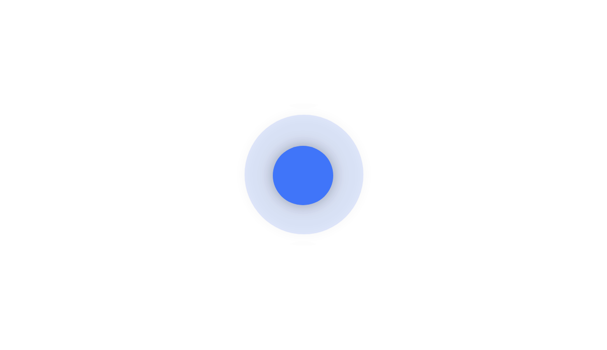
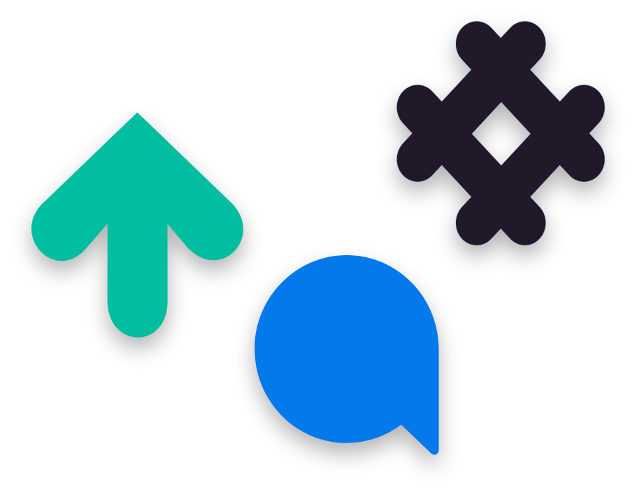
About Project SGIS EDU는, 통계지리정보라는 학습 주제를 가진 디지털 교보재로 초·중·고교 학습 정규 과정에서 활용할 수 있는 교육 서비스 입니다.
모호한 대상에게 SGIS 활용 가이드로 제공되던 기존의 서비스를
재구성하여, 초·중·고교생에게 통계지리정보 기반의 새로운 교육
서비스를 제공하는 것을 목표로 하였습니다.
따라서, 새로운 SGIS EDU 서비스의 아이덴티티를 정립하고,
세분된 서비스 사용자의 학습 경험을 향상시키기 위해 대상별 특성을
고려한 UXUI의 재구성이 필요하였습니다.
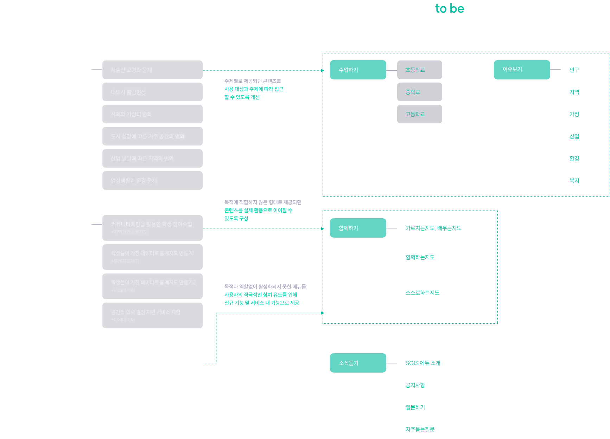
통계지리정보에 대하여 관심을 가질 수 있도록 다양한 콘텐츠로의 접근성을 우선적으로 고려합니다.
관심 분야를 심층적으로 탐구할 수 있도록 콘텐츠간 연결성을 우선적으로 고려합니다.
필요한 콘텐츠를 빠르게 찾을 수 있도록 정보 탐색 편의성을 우선적으로 고려합니다.
둥근 라운드 타입의 개성있는 서체를 활용하여 유연하고 친근한 분위기를 전달합니다.
고딕 타입의 형태적 특징과 밸런스가 좋은 서체로 가독성을 높이고 트렌드한 이미지를 전달합니다.
꾸밈없는 기본 고딕 서체를 사용하여 가독성과 집중도를 높입니다.
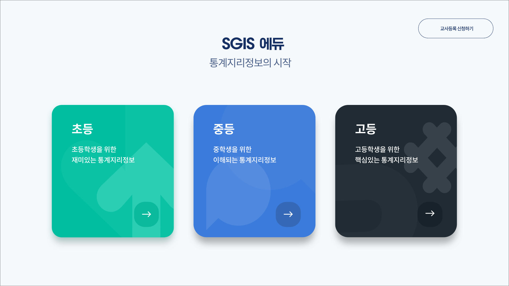
인트로 페이지에서는 대상별 콘텐츠 제공 방식을 모티프로 만든 그래픽과 컬러로 각 서비스의 차별화된 아이덴티티를 전달합니다.
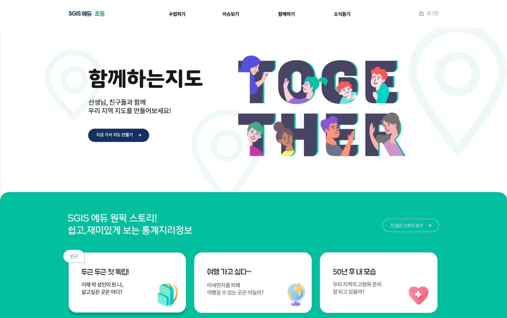
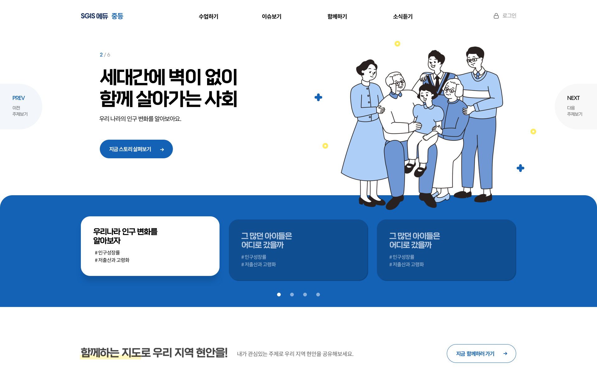
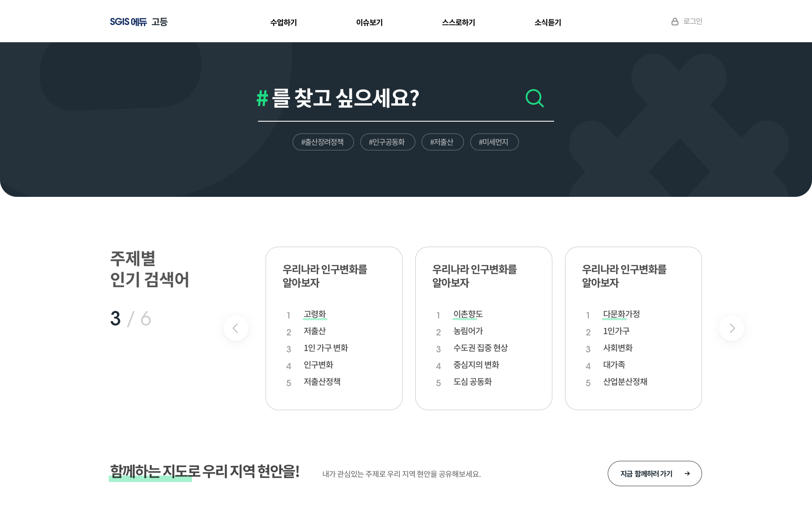
메인에서는 대상별 아이덴티티가 가장 두드러집니다.
초등은 개성있는 디자인 요소들로 팬시한 분위기를 전달하여 콘텐츠에 관심을 가질 수 있도록 구성하였습니다.
중등은 주제와 관련된 일러스트와 추천 스토리로 콘텐츠에 주목할 수 있도록 구성하였습니다.
고등은 다크한 컬러를 통해 콘텐츠에 집중하게 하고, 필요한 정보를 빠르게 탐색할 수 있도록 구성하였습니다.
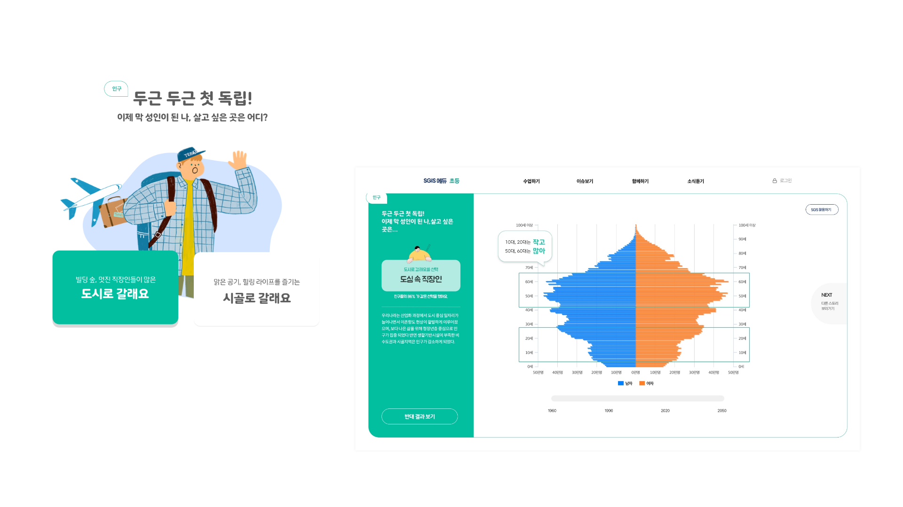
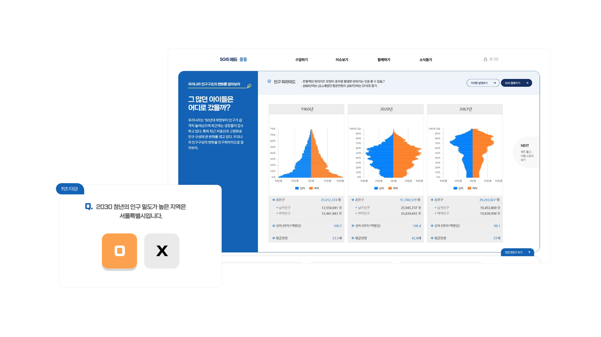
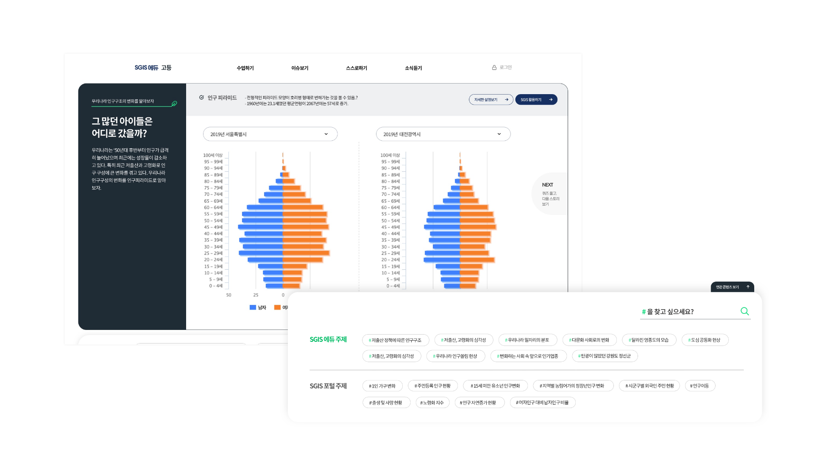
수업하기에서는 같은 주제의 콘텐츠를 대상별 특성에 따라 차별화된 방식으로 전달합니다.
초등은 Mbti, 밸런스게임과 같은 인터랙티브 콘텐츠를 활용하여 게임처럼 학습 할 수 있도록 구성하였습니다.
중등은 연관된 콘텐츠를 함께 제시하여 주제를 심층적으로 탐구하고, 퀴즈를 통해 복습할 수 있도록 구성하였습니다.
고등은 검색기능 강화와 콘텐츠 간 비교 기능을 제공하여 주제를 입체적으로 학습할 수 있도록 구성하였습니다.
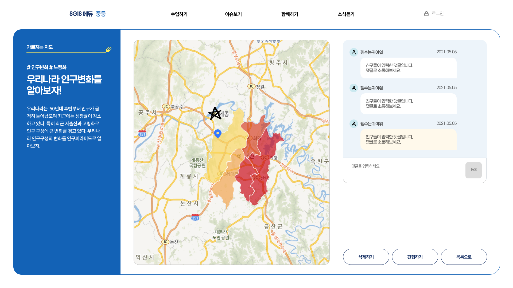
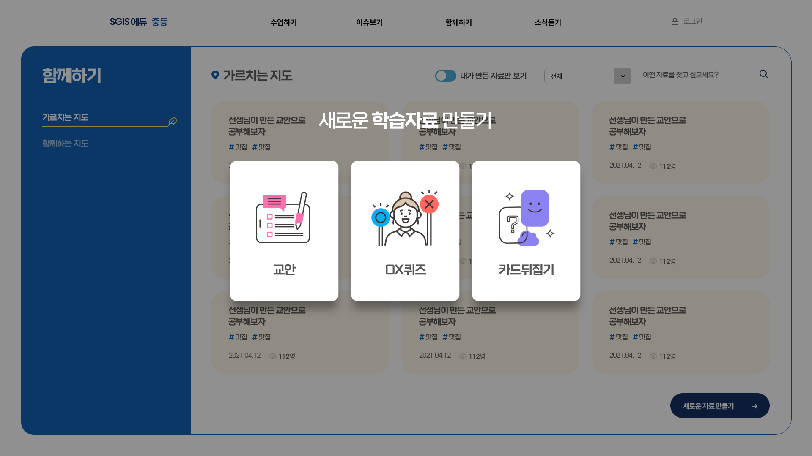
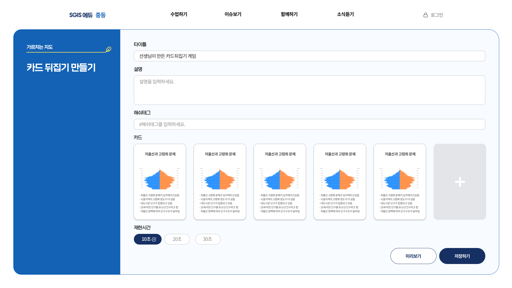
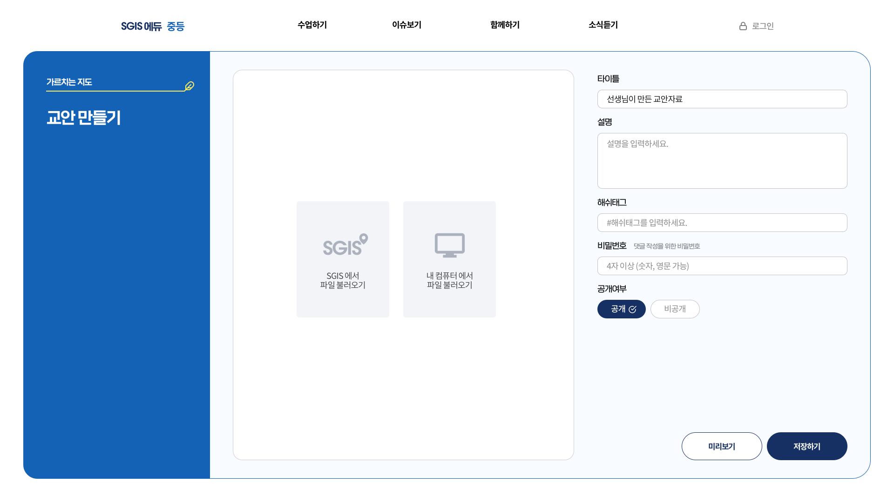
기존 콘텐츠를 활용하여 교사들이 통계지리정보를 활용해 교안을 만들고,
학생들과 함께 수업할 수 있도록 재구성하였습니다.
next w
TATA OMS
